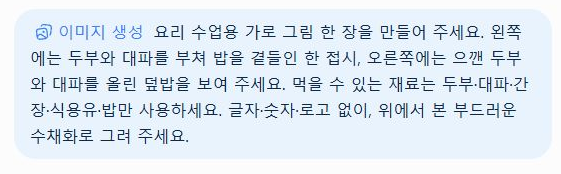
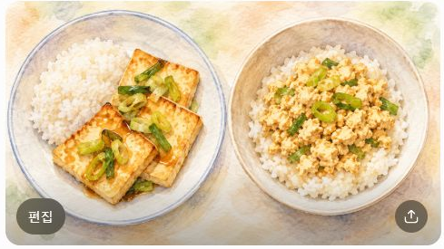

실제 조작 화면을 순서대로 연결했습니다. 아래 사진을 누르면 원본 크기로 열립니다.
실제 조작 화면을 순서대로 연결했습니다. 아래 사진을 누르면 원본 크기로 열립니다.Bravo AI Life 기본 사용법 · 1차시로 돌아가기
STEP 03
글로 설명한 요리를 그림으로 받기
재료와 구도를 정해 그림을 만들고 결과에 무엇이 보이는지 확인합니다.
실제 조작 화면을 순서대로 연결했습니다. 아래 사진을 누르면 원본 크기로 열립니다.이미지 생성 고르기
새 대화에서 ＋ → 이미지 생성을 고르세요.
재료 외에 그림의 구도까지 요청
왼쪽과 오른쪽에 놓을 요리, 시점, 표현 방식, 제외할 요소를 말합니다. 아래는 실제로 보낸 요청입니다.

두 접시를 나란히 비교
왼쪽에는 두부 부침, 오른쪽에는 두부 덮밥이 보이나요? 색으로 표현된 재료는 사진만으로 정확히 식별하기 어렵습니다. 이 그림은 실제 조리 사진이나 영양 정보가 아닙니다.

입력 원문·연습 문장
요리 수업용 가로 그림 한 장을 만들어 주세요. 왼쪽에는 두부와 대파를 부쳐 밥을 곁들인 한 접시, 오른쪽에는 으깬 두부와 대파를 올린 덮밥을 보여 주세요. 먹을 수 있는 재료는 두부·대파·간장·식용유·밥만 사용하세요. 글자·숫자·로고 없이, 위에서 본 부드러운 수채화로 그려 주세요.